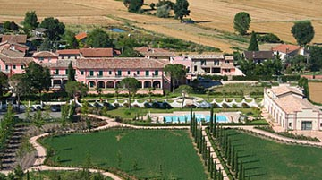
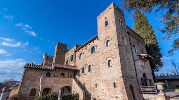
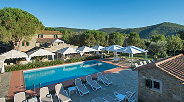

Lodging:

Hotel Villa Zuccari, San Luca ,2 nights
In the Zuccari family since the 1500s, this gorgeous villa is surrounded by expansive rose-filled
gardens and the vineyards of Montefalco. (pool)

Castello di Monterone, Perugia, 1 night
This 11th-century castle-turned-luxury hotel overlooks the vineyard-rich valley of Perugia and
features bright airy rooms and Turkish baths. (pool, spa)

La Corte dei Papi, Cortona, 2 nights
Feel welcomed like family by owner David Papi at this refined and superbly appointed 18th-century
country home, rated one of the top hotels in Italy and a Acme Adventure Travel-exclusive property.
(pool)
Everyone at Their Own Pace
We design and support our Tuscany and Umbria trips to suit mixed abilities and varied interests—so you
can set your own pace, then change things up as the day unfolds. And all guests are free to do the same,
traveling together or apart, with no one cramping anyone else's style. Which sounds easy in theory, but
it's hard to pull off. Here's more on how we do it.
More Leaders to Support You
On our Tuscany and Umbria trips we have an extra leader supporting you along the road—for a total of
three, compared to the industry standard two. So we can be in more places at once, giving personal
attention to guests traveling at their own pace. Here's more on our Trip Leaders.
A Second Van When You Need It
Acme Adventure Travel is the only active travel company providing two support vans in Tuscany and
Umbria—because we know it's essential to ensure a truly great travel experience. It doubles our ability
to be there when you need us to offer hydration, lighten your load or give you a lift if it's time to
take a break. Read more on why two vans make all the difference.
Great Bikes Included
Our custom-designed titanium bikes are best in class. From avid cyclists to easygoing riders, we believe
that everyone deserves a seriously great bike to match their riding style. Learn more about our bike
fleet.
Navigate Your Way in Tuscany and Umbria
Your ride comes equipped with a GPS device, preloaded with all the routes and route options for your
trip. If you prefer to bring your own device, we also have downloadable GPS files and of course, our
good old paper directions are always available. Read more on why our navigation options are the best.
We Live in the Neighborhood
Our Trip Leaders in Tuscany and Umbria live in the area and are deeply engaged in their communities,
giving them unique inside knowledge they're happy to share in making your experience that much richer.
They'll introduce you to people, customs and parts of town you'd likely never encounter on your own—and
teach you a few local phrases to help break the ice.
Your Trip Will Run. Period.
Under our Book with Confidence policy, your Acme Adventure Travel trip will run even for one or two
people (or a family of three or four), subject to a nominal extra fee. Or transfer to another trip, and
we'll give you a credit. It's all part of our trademark commitment to treating guests with integrity,
transparency and total accountability. Read all the details.
Our Cultural Roots Run Deep
Thanks to our extensive connections in Tuscany and Umbria, Acme Adventure Travel takes you off the
beaten track and deep into the region's culture in ways that traditional travel can never hope to do.
We know the people and their customs, the legacy of art and architecture, the complex history and
politic—and if we're not sure, our amazing local experts can fill in the blanks.